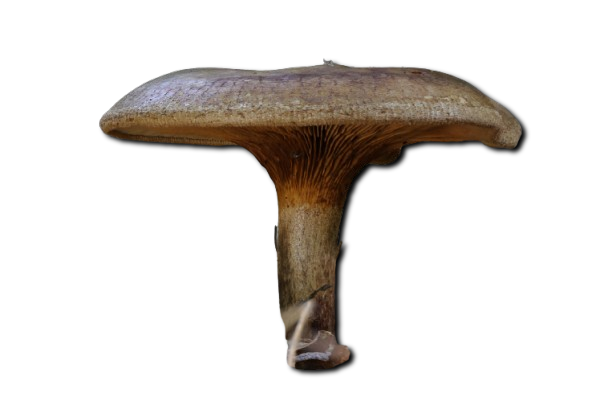
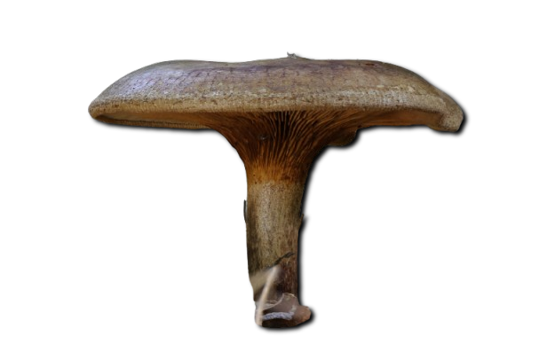

Descripción morfológica
Paxillus involutus, conocido como "paxilo enrollado" o "hongo enrollado", es un basidiomiceto de la familia Paxillaceae. Sus cuerpos fructíferos presentan sombreros de 5-15 cm de diámetro, inicialmente convexos con margen fuertemente enrollado (de ahí "involutus"), luego aplanados y finalmente deprimidos en el centro. La cutícula es aterciopelada, de color marrón oliváceo a amarillo ocre, viscosa en tiempo húmedo. Las láminas son decurrentes, fácilmente separables de la carne, de color amarillo pálido que se oscurece al tacto. El pie (4-8 cm) es cilíndrico o ensanchado en la base, del mismo color que el sombrero pero más pálido. La carne es amarillenta, tornándose rojiza al corte, con olor ligeramente ácido y sabor amargo.
Características distintivas
- Margen: Enrollado característico, especialmente en ejemplares jóvenes.
- Láminas: Decurrentes y anastomosadas (forman redes cerca del pie).
- Esporas: Elipsoidales, lisas, 7-10 × 5-6 µm, de color ocre en masa.
- Reacción: Carne y láminas se oscurecen al corte o manipulación.
Distribución y hábitat
Especie cosmopolita común en bosques templados y boreales de Europa, Asia y América. Crece en suelos ácidos a neutros (pH 4-7), formando micorrizas con diversas especies arbóreas, especialmente abedules (Betula), pinos (Pinus) y álamos (Populus). Fructifica desde finales de verano hasta otoño (agosto-noviembre), a menudo en grandes grupos. Es particularmente abundante en bosques jóvenes y áreas perturbadas, mostrando alta tolerancia a suelos pobres y contaminados (incluso en antiguas minas).
Ecología especializada
- Micorrizas: Forma asociaciones ectomicorrícicas con más de 20 especies de árboles.
- Bioacumulador: Extrae metales pesados (Cd, Pb) del suelo hacia los cuerpos fructíferos.
- Invasividad: Se ha expandido agresivamente en el hemisferio sur con plantaciones de pinos.
Toxicidad y mecanismo de acción
Contiene toxinas termolábiles (involutinas) que desencadenan una reacción autoinmune (síndrome de Paxillus). Tras exposiciones repetidas, el sistema inmunitario produce anticuerpos IgG que atacan los glóbulos rojos, causando anemia hemolítica, fallo renal y shock. Los síntomas iniciales (náuseas, sudoración) aparecen 1-3 horas post-ingesta, pero la reacción inmunológica grave ocurre tras múltiples consumos (incluso años después). La mortalidad ronda el 10% en casos de síndrome completo, requiriendo transfusiones sanguíneas.
| Compuesto | Efecto | Tiempo reacción |
|---|---|---|
| Involutina A | Hemólisis inmunomediada | 2-48 horas |
| Paxillina | Necrosis tubular renal | 24-72 horas |
Historia y controversia
Tradicionalmente consumido en Europa del Este tras hervido prolongado (creyéndose que eliminaba toxinas). En 1944, el micólogo alemán Julius Schäffer murió tras documentar su toxicidad acumulativa. Estudios recientes (2010-2023) demuestran que:
- La cocción no destruye los antígenos responsables de la reacción inmunológica.
- La susceptibilidad varía genéticamente (mayor riesgo en haplogrupo HLA-B27).
- Puede contener hasta 500 ppm de cadmio en áreas mineras.
Identificación y precauciones
- Diferencias con Paxillus rubicundulus: Margen menos enrollado y láminas más pálidas.
- Prueba de oscurecimiento: Las láminas se vuelven marrón rojizo al frotarlas.
- Recomendaciones: Evitar completamente su consumo, incluso en pequeñas cantidades.
Investigación actual
- Uso de sus enzimas ligninolíticas en biorremediación de suelos contaminados.
- Estudios sobre sus mecanismos de tolerancia a metales pesados.
- Desarrollo de test ELISA para detectar anticuerpos anti-Paxillus en sangre.